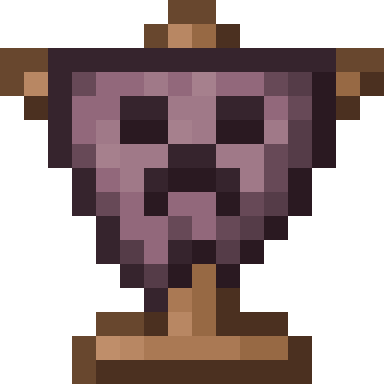

Chaotica 4.0
Overview
Arcana tree
Quests
Mods

Majrusz's Progressive Difficulty Continued
majruszsdifficulty
· 1.1.3 · Majrusz (original creator), Draupnir (maintainer) · majruszs-difficulty-neoforge-1.21.1-1.1.3.jar
Mechanics
Mod that progressively increases the game difficulty over time.
No dependencies declared.
Items & blocks (57)
Mobs (6)